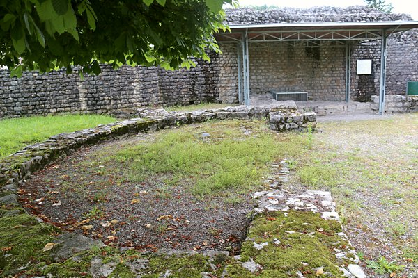
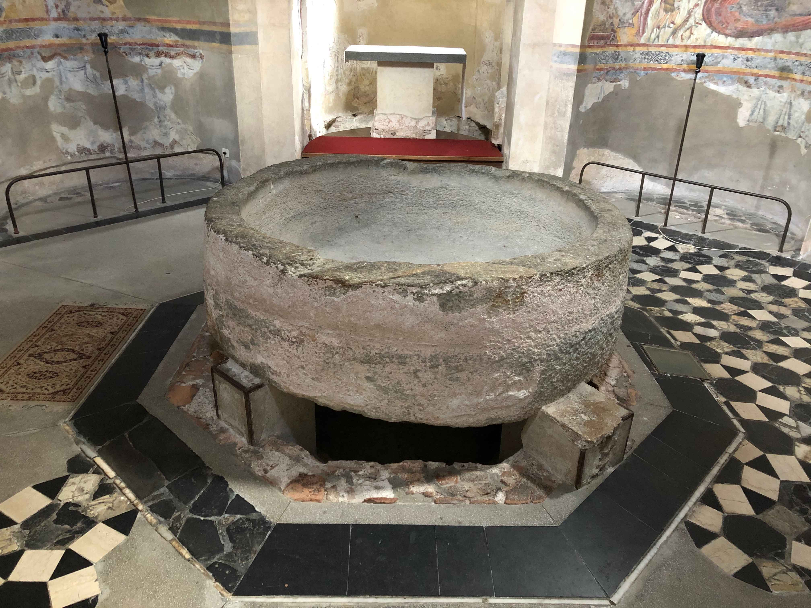
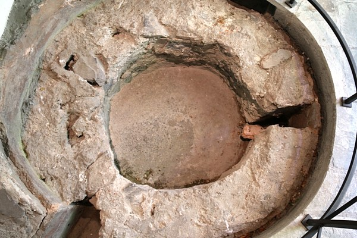

Städte wie Jerusalem und Rom bieten wichtige Informationen über die Praxis der frühen Christenheit. Um etwas über die frühchristliche Taufpraxis zu erfahren, muss man aber nicht erst nach Italien oder in das Heilige Land reisen. Hierzu finden sich bereits vor der Haustüre wichtige Zeugnisse: Die drei heute noch erhaltenen frühchristlichen Baptisterien der Schweiz (griech. βάπτισμα «Eintauchen, Waschung, Taufe»; christliche Taufkapelle) liefern Erkenntnisse über die Taufpraxis im 5. und 6. Jahrhundert.
Links des Rheins: Bad Zurzach
An einer ehemaligen römischen Handelsstrasse befindet sich zwischen Basel und dem Bodensee der kleine Ort Bad Zurzach. Dieser diente seit dem 1. Jahrhundert als wichtiger Militärstützpunkt für den Rheinübergang. Im Jahr 401 verliessen die Truppen das Kastell. In den folgenden Jahren errichteten Christen dort eine Kirche und wenig später eine Taufanlage mit Taufbecken und angrenzenden Räumen für die Taufliturgie. Dieses Taufbecken ist 60 Zentimeter tief und weist eine quadratische Form auf. An der Westseite führen drei Stufen hinauf und zwei hinunter. Der Täufling stand also gegen Osten gewandt. Das Becken wurde im Laufe der Zeit durch Bautätigkeiten bei gleichbleibender Tiefe verkleinert.
Das Baptisterium in Bad Zurzach. Das Taufbecken im Hintergrund unter dem Dach; im Vordergrund die Grundstrukturen der Kastellkirche. (Bild: Maria Lissek)
An der Südspitze des Luganersees: Riva San Vitale
Das Johannes dem Täufer geweihte Baptisterium in Riva San Vitale ist das älteste noch erhaltene christliche Bauwerk der Schweiz. Der Ort war zunächst Teil des Bistums Como und gehörte ab 553 zu Aquileia (beides im heutigen Norditalien gelegen), von wo sich das Christentum über das Alpenland ausbreitete. Die Anlage stammt aus dem 6. Jahrhundert und zeigt im Kern ein achteckiges Taufbecken, das von einem quadratischen Zentralbau umgeben wird, den ein quadratischer Umgang rahmt. Es handelt sich um ein Beispiel für ein Umgangsbaptisterium, dessen Anlage trotz der mittelalterlichen Veränderungen heute noch nachvollziehbar ist: Auch hier finden sich liturgische Räume, das Baptisterium und das Kirchgebäude. Zudem wurden bei Restaurierungsarbeiten Fresken (8. bis 17. Jahrhundert) mit Darstellungen aus dem Leben Jesu freigelegt.
Das Baptisterium in Riva San Vitale. Das ursprüngliche, ackteckige Taufbecken mit Stufen und Abfluss ist unter dem monolithischen Taufbecken (um 1200) erhalten. (Bild: Adriana Basso Schaub)
Am Eingang zum oberen Rhonetal: Saint Maurice
Auch Saint Maurice zeichnet sich durch seine Lage an einer römischen Handelsstrasse aus: Es diente als Zollstation für die Waren von Gallien nach Italien. Zudem verbindet sich mit diesem Ort die Legende von der Thebäischen Legion. Sie berichtet, dass der Kommandant Mauritius mit weiteren Soldaten zu Beginn des 4. Jahrhunderts das Martyrium erlitten haben soll. Demnach dienten zwar christliche Soldaten dem römischen Kaiser, weigerten sich aber, gegen unschuldige Christen vorzugehen. Die Verehrung dieser Märtyrer ist seit dieser Zeit im Rahmen einer Basilika, der 515 eine Klostergründung folgte, belegt. Zudem sind die Fundamente eines Baptisteriums aus dem 6. Jahrhundert erhalten. Die Taufspendung an Märtyrer und Pilgerorten ist frühe gängige Praxis. Zudem liegt Saint Maurice an der Via Francigena, einem Pilgerweg, der Canterbury mit Rom verband. Das Baptisterium hat ebenfalls einen quadratischen Grundriss mit einem Seitenumgang. Im Zentrum des Baptisteriums befand sich ein rundes, in den Boden eingelassenes Taufbecken aus Marmorplatten, das an der Nord und Südseite Stufen aufweist. Dieses befindet sich heute im Kreuzgang der Abtei.
«Darum gehet hin und machet zu Jüngern alle Völker ...» (Mt 28,19)
Das bis heute über alle Konfessionsgrenzen hinaus Verbindende der Christenheit ist die Taufe. Das Neue Testament legt dafür im sogenannten Taufbefehl Jesu an seine Jünger (Mt 28,16–20) mit der trinitarischen Formel den Grundstein. Doch wie, wer und wo genau getauft wurde, ist erst durch die frühchristlichen Zeugnisse bekannt.
Das Taufbecken von Saint Maurice. (Bild: Maria Lissek)
Mit Hilfe der drei Schweizer Baptisterien und textlicher Quellen können Vermutungen über die Taufpraxis angestellt werden: Zunächst verweisen die angrenzenden Räume auf Riten, die dem Taufvorgang vorausgingen. Die Täuflinge wurden in der Fastenzeit in den christlichen Glauben eingeführt. Dieser Unterweisung folgte – meist in der Osternacht – der Taufakt im Baptisterium selbst. Die Täuflinge stiegen nach einer Waschung in das Taufbecken hinab, entsagten dem Teufel, bekannten ihren Glauben, legten ihre Gewänder und damit symbolisch den «alten Menschen» ab, wurden gesalbt, dreimal untergetaucht oder mit Wasser übergossen, um dann das neue Gewand, den «neuen Menschen» in Christus, anzulegen. Hintergrund dieses Vorgehens ist die theologische Dimension der Taufe, dass die Täuflinge im Untertauchen symbolisch in Jesus Christus sterben, um durch ihn in das gegenwärtige Leben aufzu(er)stehen (Röm 6,1–11). Durch die Taufe wurden die Menschen in die christliche Gemeinschaft aufgenommen und nahmen demzufolge das erste Mal auch am Abendmahl im Kirchraum teil. Über diesen Vorgang geben die beschriebenen Orte in der Schweiz heute noch lebhaft Auskunft und bilden somit ein wichtiges Zeugnis für die Taufpraxis im frühen Christentum.
Maria Lissek ist Assistentin am Institut für Historische Theologie an der Universität Bern.
Weitere Artikel von {{ author.author }} finden Sie hier:
Zur Vertiefung:
- Perler, Otmar: «Frühchristliche Baptisterien in der Schweiz»: Zeitschrift für Schweizerische Kirchengeschichte 51 (1957), 81–100.